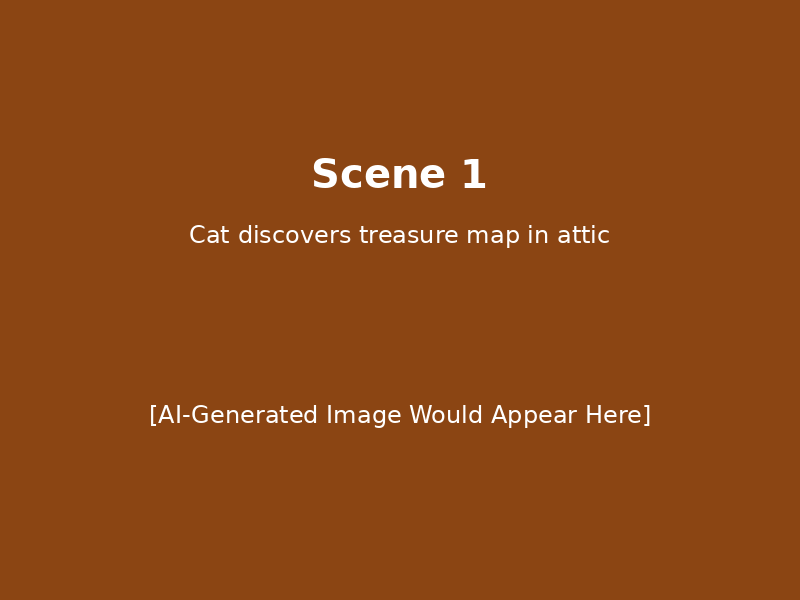
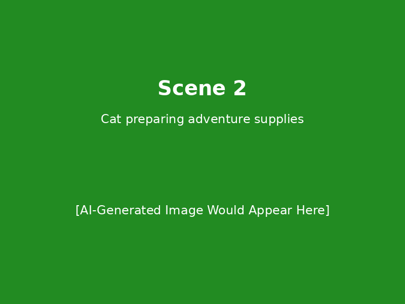
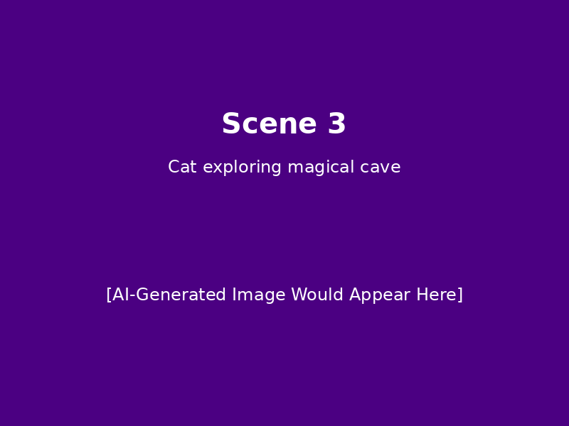
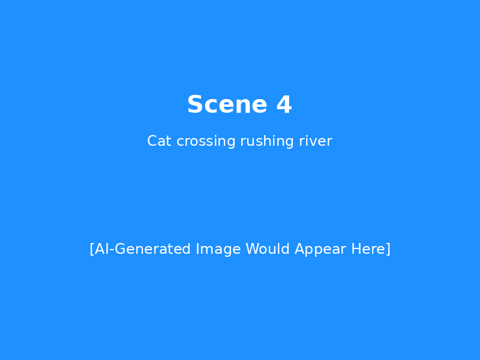
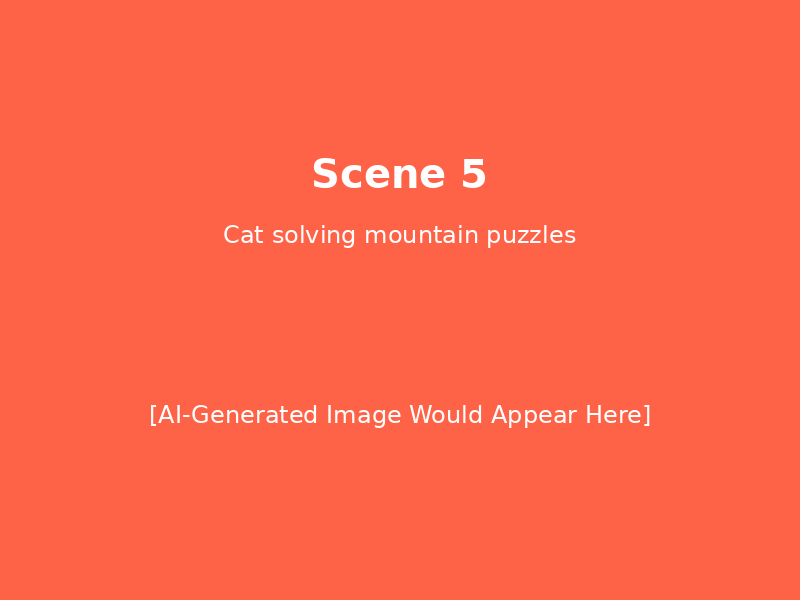
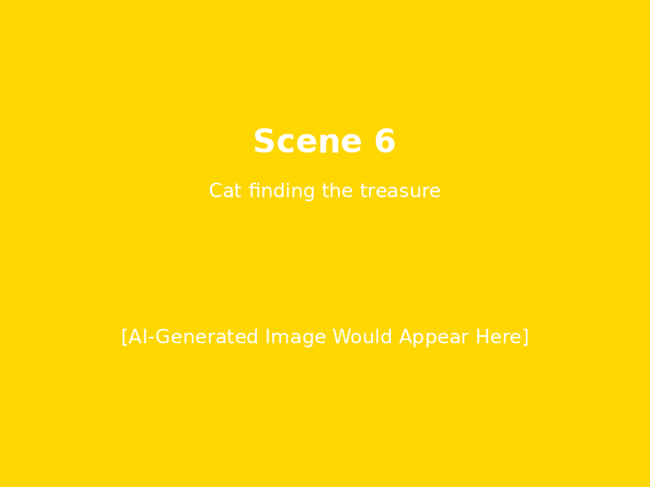

🎨 This is a DEMO version with placeholder images! 🎨
With a Google API key, the real version will generate unique, vibrant cartoon images for each scene.
🔑 To Generate Real AI Images:
- Get a Google API key from Google AI Studio
- Set the environment variable:
export GOOGLE_API_KEY="your-key-here"
- Run the main script:
python treasure_story_generator.py
Scene 1

Scene 1: The Discovery
In a dusty old attic, young Captain Whiskers the cat was exploring boxes left by his grandmother. As sunlight streamed through a cracked window, something glinted beneath a pile of old books. With careful paws, he uncovered a rolled-up parchment with mysterious markings - it was an ancient treasure map! The map showed winding paths through jungles, across rivers, and up mountains, with a large 'X' marking the spot where incredible riches awaited.
Scene 2

Scene 2: Preparing for Adventure
Captain Whiskers knew this was the adventure of a lifetime! He gathered his supplies: a sturdy backpack, a compass that belonged to his grandfather, a water bottle, some fish treats for energy, and most importantly, his lucky red bandana. He studied the map carefully, tracing the route with his claw. The first destination was the Whispering Woods, where the map indicated a hidden cave entrance.
Scene 3

Scene 3: Into the Whispering Woods
The Whispering Woods lived up to their name - every leaf seemed to murmur secrets as Captain Whiskers ventured deeper. Following the map's directions, he found the cave entrance hidden behind a curtain of hanging vines. Inside, glowing crystals lit the way, and ancient symbols on the walls matched those on his map. He discovered the first clue: a riddle carved in stone that would lead him to the next location.
Scene 4

Scene 4: The Rushing River Challenge
Solving the riddle led Captain Whiskers to the banks of Roaring Rapids River. The map showed he needed to cross, but the water was swift and deep. Thinking cleverly, he noticed fallen logs and stepping stones. With careful balance and his natural cat agility, he leaped from stone to stone, log to log, until he reached the other side where another clue awaited - a golden key hidden in the roots of an ancient oak tree.
Scene 5

Scene 5: The Mountain Peak Mystery
The golden key led Captain Whiskers up Crystal Peak Mountain to a mysterious door built into the rockface. As he inserted the key, the door creaked open to reveal a chamber filled with puzzles and traps. Using his wit and agility, he solved spinning wheel puzzles, avoided swinging pendulums, and navigated through a maze of mirrors. Each puzzle solved revealed part of the final location of the treasure.
Scene 6

Scene 6: The Treasure Discovery
Following the final clues, Captain Whiskers arrived at a beautiful hidden valley where waterfalls cascaded into rainbow pools. There, beneath the largest waterfall, was a cave entrance marked with the same symbol as his map. Inside, he found not just gold and jewels, but something even more valuable - ancient scrolls containing the wisdom and stories of generations past. Captain Whiskers realized the real treasure was the knowledge and confidence he'd gained on his journey, though the gold would certainly help him share more adventures with friends!
Demo generated on: 2025-05-27T14:51:47.050220
Model: demo-placeholder (placeholder content)
✨ Ready for real AI generation with Google Gemini ✨